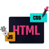
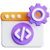

Front-end
Development

Frontend development involves designing and coding website visual elements, using HTML, CSS, and JavaScript, to ensure an enjoyable user experience.
Back-end
Development

It involves creating the unseen part of a website that powers its functionality and stores its data using programming languages like Python, Java, and Ruby.
Android apps
Development

It involves creating software applications for mobile devices that run on the Android operating system, using programming languages such as Java and Kotlin.